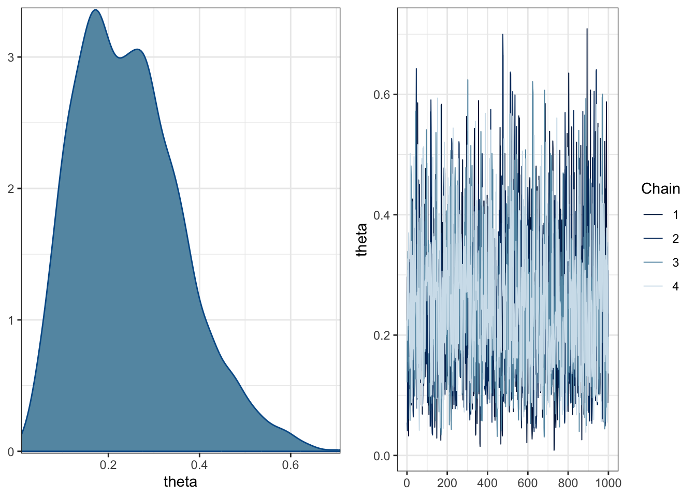

library(tidyverse)
library(rstan)
library(cmdstanr)
library(rethinking)
library(brms)
library(posterior)
library(bayesplot)
library(loo)
library(shinystan)
library(bayestestR)
library(tidybayes)
library(tidybayes.rethinking) # mjskay/tidybayes.rethinking
library(performance)
library(parameters)
library(broom)
library(broom.mixed)
library(modelsummary)
library(marginaleffects)
library(ggeffects)
library(ggformula)
library(mosaic)
options(mc.cores = parallel::detectCores(), brms.backend = "cmdstanr")
rstan_options(auto_write = TRUE)
rstan_options(threads_per_chain = 1)
check_cmdstan_toolchain(fix = TRUE, quiet = TRUE)
register_knitr_engine(override = FALSE)
theme_set(theme_bw())
set.rseed(666)Bayesian inference with Stan
References
Setup environment
Scientific question and statistical estimand
XXX
Specify scientific model
Specify statistical model
data {
int<lower=0> N;
array[N] int<lower=0, upper=1> y;
}
parameters {
real<lower=0, upper=1> theta;
}
model {
theta ~ beta(1, 1); // uniform prior on interval 0, 1
y ~ bernoulli(theta); // likelihood
}Fit model
y <- c(0, 1, 0, 0, 0, 0, 0, 0, 0, 1)
d <- list(N = length(y), y = y)fit <- mod$sample(data = d)Summarize posterior
mcmc_combo(fit$draws(variables = "theta"))
fit$summary(variables = "theta")Print environment
sessioninfo::session_info()─ Session info ───────────────────────────────────────────────────────────────
setting value
version R version 4.4.3 (2025-02-28)
os macOS Sequoia 15.3.2
system aarch64, darwin20
ui X11
language (EN)
collate en_US.UTF-8
ctype en_US.UTF-8
tz America/New_York
date 2025-03-20
pandoc 3.2 @ /Applications/RStudio.app/Contents/Resources/app/quarto/bin/tools/aarch64/ (via rmarkdown)
quarto 1.6.42 @ /usr/local/bin/quarto
─ Packages ───────────────────────────────────────────────────────────────────
package * version date (UTC) lib source
abind 1.4-8 2024-09-12 [1] CRAN (R 4.4.1)
arrayhelpers 1.1-0 2020-02-04 [1] CRAN (R 4.4.0)
backports 1.5.0 2024-05-23 [1] CRAN (R 4.4.0)
base64enc 0.1-3 2015-07-28 [1] CRAN (R 4.4.0)
bayesplot * 1.11.1 2024-02-15 [1] CRAN (R 4.4.0)
bayestestR * 0.15.2 2025-02-07 [1] CRAN (R 4.4.1)
bridgesampling 1.1-2 2021-04-16 [1] CRAN (R 4.4.0)
brms * 2.22.0 2024-09-23 [1] CRAN (R 4.4.1)
Brobdingnag 1.2-9 2022-10-19 [1] CRAN (R 4.4.0)
broom * 1.0.7 2024-09-26 [1] CRAN (R 4.4.1)
broom.mixed * 0.2.9.6 2024-10-15 [1] CRAN (R 4.4.1)
checkmate 2.3.2 2024-07-29 [1] CRAN (R 4.4.0)
cli 3.6.4 2025-02-13 [1] CRAN (R 4.4.1)
cmdstanr * 0.8.1 2024-06-06 [1] https://stan-dev.r-universe.dev (R 4.4.0)
coda 0.19-4.1 2024-01-31 [1] CRAN (R 4.4.0)
codetools 0.2-20 2024-03-31 [2] CRAN (R 4.4.3)
colorspace 2.1-1 2024-07-26 [1] CRAN (R 4.4.0)
colourpicker 1.3.0 2023-08-21 [1] CRAN (R 4.4.0)
crosstalk 1.2.1 2023-11-23 [1] CRAN (R 4.4.0)
curl 6.2.1 2025-02-19 [1] CRAN (R 4.4.1)
data.table 1.17.0 2025-02-22 [1] CRAN (R 4.4.1)
datawizard 1.0.1 2025-03-07 [1] CRAN (R 4.4.1)
digest 0.6.37 2024-08-19 [1] CRAN (R 4.4.1)
distributional 0.5.0 2024-09-17 [1] CRAN (R 4.4.1)
dplyr * 1.1.4 2023-11-17 [1] CRAN (R 4.4.0)
DT 0.33 2024-04-04 [1] CRAN (R 4.4.0)
dygraphs 1.1.1.6 2018-07-11 [1] CRAN (R 4.4.0)
emmeans 1.10.7 2025-01-31 [1] CRAN (R 4.4.1)
estimability 1.5.1 2024-05-12 [1] CRAN (R 4.4.0)
evaluate 1.0.3 2025-01-10 [1] CRAN (R 4.4.1)
farver 2.1.2 2024-05-13 [1] CRAN (R 4.4.0)
fastmap 1.2.0 2024-05-15 [1] CRAN (R 4.4.0)
forcats * 1.0.0 2023-01-29 [1] CRAN (R 4.4.0)
furrr 0.3.1 2022-08-15 [1] CRAN (R 4.4.0)
future 1.34.0 2024-07-29 [1] CRAN (R 4.4.0)
generics 0.1.3 2022-07-05 [1] CRAN (R 4.4.0)
ggdist 3.3.2 2024-03-05 [1] CRAN (R 4.4.0)
ggeffects * 2.2.1 2025-03-11 [1] CRAN (R 4.4.1)
ggformula * 0.12.0 2023-11-09 [1] CRAN (R 4.4.0)
ggplot2 * 3.5.1 2024-04-23 [1] CRAN (R 4.4.0)
ggridges * 0.5.6 2024-01-23 [1] CRAN (R 4.4.0)
globals 0.16.3 2024-03-08 [1] CRAN (R 4.4.0)
glue 1.8.0 2024-09-30 [1] CRAN (R 4.4.1)
gridExtra 2.3 2017-09-09 [1] CRAN (R 4.4.0)
gtable 0.3.6 2024-10-25 [1] CRAN (R 4.4.1)
gtools 3.9.5 2023-11-20 [1] CRAN (R 4.4.0)
haven 2.5.4 2023-11-30 [1] CRAN (R 4.4.0)
hms 1.1.3 2023-03-21 [1] CRAN (R 4.4.0)
htmltools 0.5.8.1 2024-04-04 [1] CRAN (R 4.4.0)
htmlwidgets 1.6.4 2023-12-06 [1] CRAN (R 4.4.0)
httpuv 1.6.15 2024-03-26 [1] CRAN (R 4.4.0)
igraph 2.1.4 2025-01-23 [1] CRAN (R 4.4.1)
inline 0.3.21 2025-01-09 [1] CRAN (R 4.4.1)
insight 1.1.0 2025-03-01 [1] CRAN (R 4.4.1)
jsonlite 1.9.1 2025-03-03 [1] CRAN (R 4.4.1)
knitr 1.50 2025-03-16 [1] CRAN (R 4.4.1)
labeling 0.4.3 2023-08-29 [1] CRAN (R 4.4.0)
labelled 2.14.0 2025-01-08 [1] CRAN (R 4.4.1)
later 1.4.1 2024-11-27 [1] CRAN (R 4.4.1)
lattice * 0.22-6 2024-03-20 [2] CRAN (R 4.4.3)
lifecycle 1.0.4 2023-11-07 [1] CRAN (R 4.4.0)
listenv 0.9.1 2024-01-29 [1] CRAN (R 4.4.0)
loo * 2.8.0 2024-07-03 [1] CRAN (R 4.4.0)
lubridate * 1.9.4 2024-12-08 [1] CRAN (R 4.4.1)
magrittr 2.0.3 2022-03-30 [1] CRAN (R 4.4.0)
marginaleffects * 0.25.0 2025-02-01 [1] CRAN (R 4.4.1)
markdown 1.13 2024-06-04 [1] CRAN (R 4.4.0)
MASS 7.3-64 2025-01-04 [2] CRAN (R 4.4.3)
Matrix * 1.7-2 2025-01-23 [2] CRAN (R 4.4.3)
matrixStats 1.5.0 2025-01-07 [1] CRAN (R 4.4.1)
mime 0.13 2025-03-17 [1] CRAN (R 4.4.1)
miniUI 0.1.1.1 2018-05-18 [1] CRAN (R 4.4.0)
modelsummary * 2.3.0 2025-02-02 [1] CRAN (R 4.4.1)
mosaic * 1.9.1 2024-02-23 [1] CRAN (R 4.4.0)
mosaicCore 0.9.4.0 2023-11-05 [1] CRAN (R 4.4.0)
mosaicData * 0.20.4 2023-11-05 [1] CRAN (R 4.4.0)
multcomp 1.4-28 2025-01-29 [1] CRAN (R 4.4.1)
munsell 0.5.1 2024-04-01 [1] CRAN (R 4.4.0)
mvtnorm 1.3-3 2025-01-10 [1] CRAN (R 4.4.1)
nlme 3.1-167 2025-01-27 [2] CRAN (R 4.4.3)
parallelly 1.42.0 2025-01-30 [1] CRAN (R 4.4.1)
parameters * 0.24.2 2025-03-04 [1] CRAN (R 4.4.1)
performance * 0.13.0 2025-01-15 [1] CRAN (R 4.4.1)
pillar 1.10.1 2025-01-07 [1] CRAN (R 4.4.1)
pkgbuild 1.4.6 2025-01-16 [1] CRAN (R 4.4.1)
pkgconfig 2.0.3 2019-09-22 [1] CRAN (R 4.4.0)
plyr 1.8.9 2023-10-02 [1] CRAN (R 4.4.0)
posterior * 1.6.1 2025-02-27 [1] CRAN (R 4.4.1)
processx 3.8.6 2025-02-21 [1] CRAN (R 4.4.1)
promises 1.3.2 2024-11-28 [1] CRAN (R 4.4.1)
ps 1.9.0 2025-02-18 [1] CRAN (R 4.4.1)
purrr * 1.0.4 2025-02-05 [1] CRAN (R 4.4.1)
QuickJSR 1.6.0 2025-02-26 [1] CRAN (R 4.4.1)
R6 2.6.1 2025-02-15 [1] CRAN (R 4.4.1)
Rcpp * 1.0.14 2025-01-12 [1] CRAN (R 4.4.1)
RcppParallel 5.1.10 2025-01-24 [1] CRAN (R 4.4.1)
readr * 2.1.5 2024-01-10 [1] CRAN (R 4.4.0)
reshape2 1.4.4 2020-04-09 [1] CRAN (R 4.4.0)
rethinking * 2.42 2025-03-19 [1] Github (rmcelreath/rethinking@ac1b3b2)
rlang 1.1.5 2025-01-17 [1] CRAN (R 4.4.1)
rmarkdown 2.29 2024-11-04 [1] CRAN (R 4.4.1)
rstan * 2.35.0.9000 2024-06-06 [1] https://stan-dev.r-universe.dev (R 4.4.0)
rstantools 2.4.0 2024-01-31 [1] CRAN (R 4.4.0)
rstudioapi 0.17.1 2024-10-22 [1] CRAN (R 4.4.1)
sandwich 3.1-1 2024-09-15 [1] CRAN (R 4.4.1)
scales * 1.3.0 2023-11-28 [1] CRAN (R 4.4.0)
sessioninfo 1.2.3 2025-02-05 [1] CRAN (R 4.4.1)
shape 1.4.6.1 2024-02-23 [1] CRAN (R 4.4.0)
shiny * 1.10.0 2024-12-14 [1] CRAN (R 4.4.1)
shinyjs 2.1.0 2021-12-23 [1] CRAN (R 4.4.0)
shinystan * 2.6.0 2022-03-03 [1] CRAN (R 4.4.0)
shinythemes 1.2.0 2021-01-25 [1] CRAN (R 4.4.0)
StanHeaders * 2.35.0.9000 2024-06-06 [1] https://stan-dev.r-universe.dev (R 4.4.0)
stringi 1.8.4 2024-05-06 [1] CRAN (R 4.4.0)
stringr * 1.5.1 2023-11-14 [1] CRAN (R 4.4.0)
survival 3.8-3 2024-12-17 [2] CRAN (R 4.4.3)
svUnit 1.0.6 2021-04-19 [1] CRAN (R 4.4.0)
tables 0.9.31 2024-08-29 [1] CRAN (R 4.4.1)
tensorA 0.36.2.1 2023-12-13 [1] CRAN (R 4.4.0)
TH.data 1.1-3 2025-01-17 [1] CRAN (R 4.4.1)
threejs 0.3.3 2020-01-21 [1] CRAN (R 4.4.0)
tibble * 3.2.1 2023-03-20 [1] CRAN (R 4.4.0)
tidybayes * 3.0.7 2024-09-15 [1] CRAN (R 4.4.1)
tidybayes.rethinking * 3.0.0 2025-03-19 [1] Github (mjskay/tidybayes.rethinking@867520f)
tidyr * 1.3.1 2024-01-24 [1] CRAN (R 4.4.0)
tidyselect 1.2.1 2024-03-11 [1] CRAN (R 4.4.0)
tidyverse * 2.0.0 2023-02-22 [1] CRAN (R 4.4.0)
timechange 0.3.0 2024-01-18 [1] CRAN (R 4.4.0)
tzdb 0.5.0 2025-03-15 [1] CRAN (R 4.4.1)
V8 6.0.2 2025-03-14 [1] CRAN (R 4.4.1)
vctrs 0.6.5 2023-12-01 [1] CRAN (R 4.4.0)
withr 3.0.2 2024-10-28 [1] CRAN (R 4.4.1)
xfun 0.51 2025-02-19 [1] CRAN (R 4.4.1)
xtable 1.8-4 2019-04-21 [1] CRAN (R 4.4.0)
xts 0.14.1 2024-10-15 [1] CRAN (R 4.4.1)
yaml 2.3.10 2024-07-26 [1] CRAN (R 4.4.0)
zoo 1.8-13 2025-02-22 [1] CRAN (R 4.4.1)
[1] /Users/marcoe02/.Rlib
[2] /Library/Frameworks/R.framework/Versions/4.4-arm64/Resources/library
* ── Packages attached to the search path.
──────────────────────────────────────────────────────────────────────────────